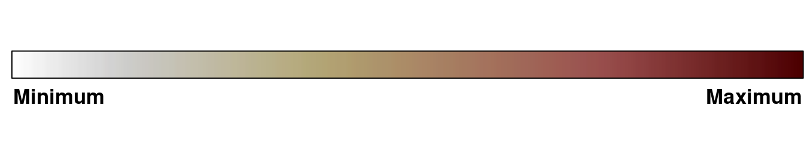
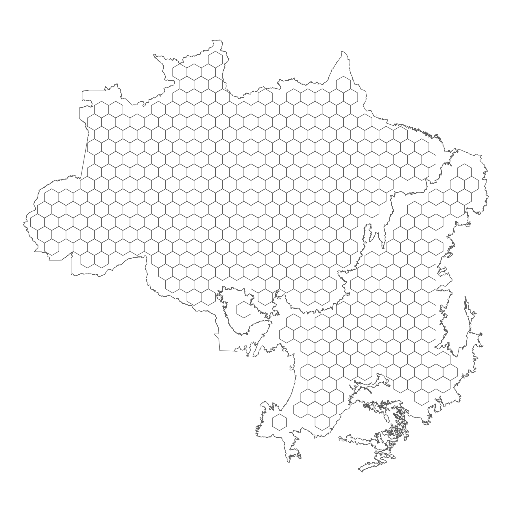
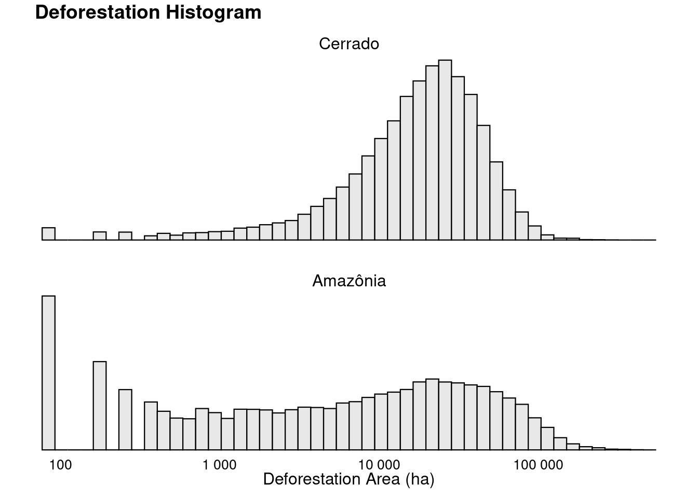
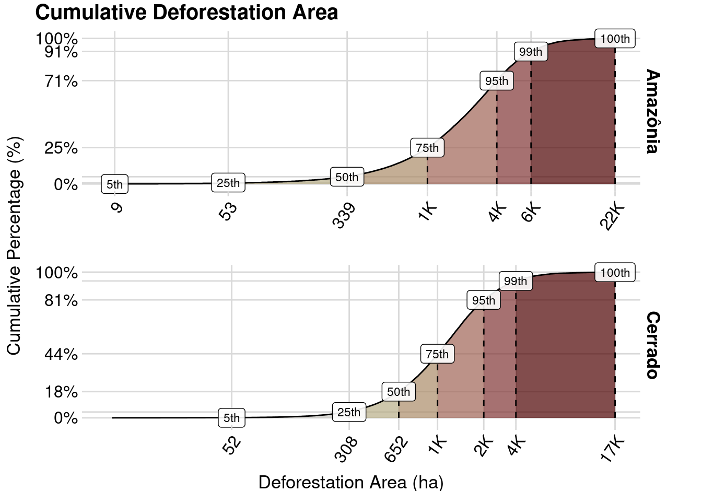
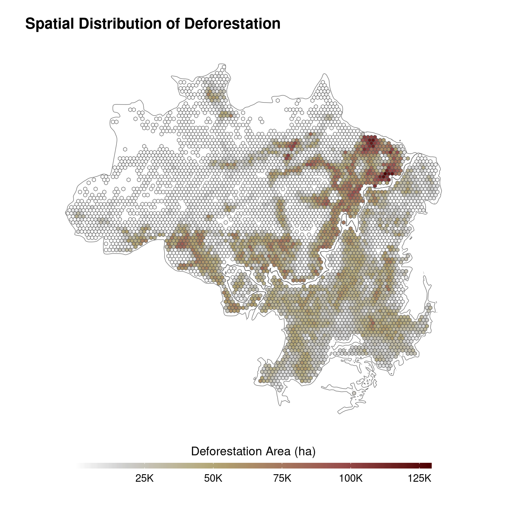
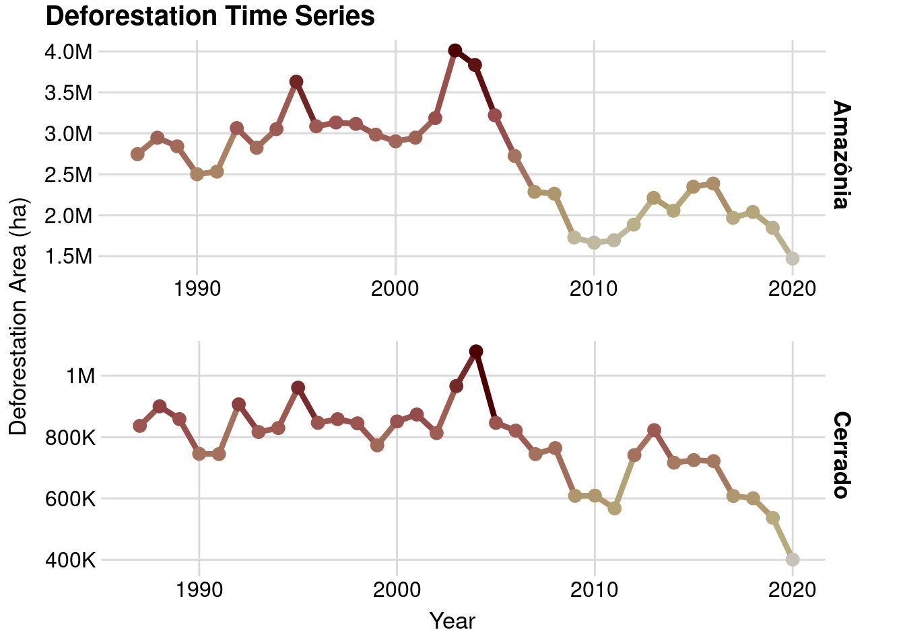
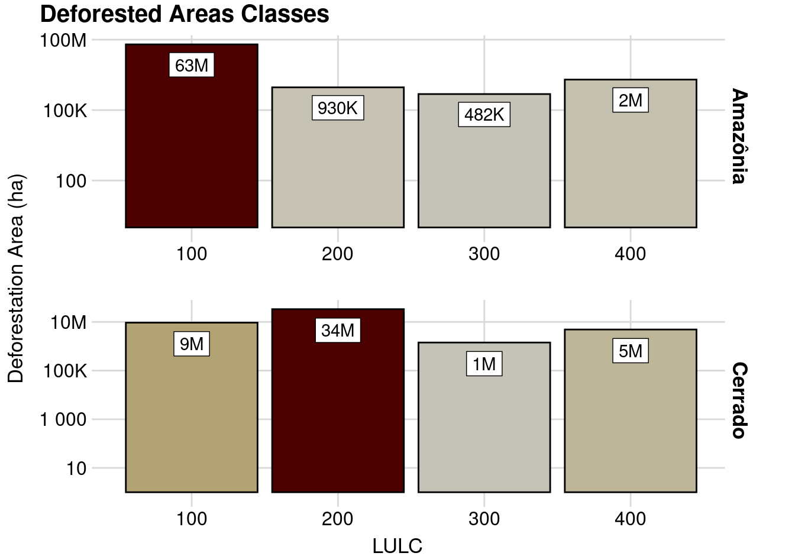
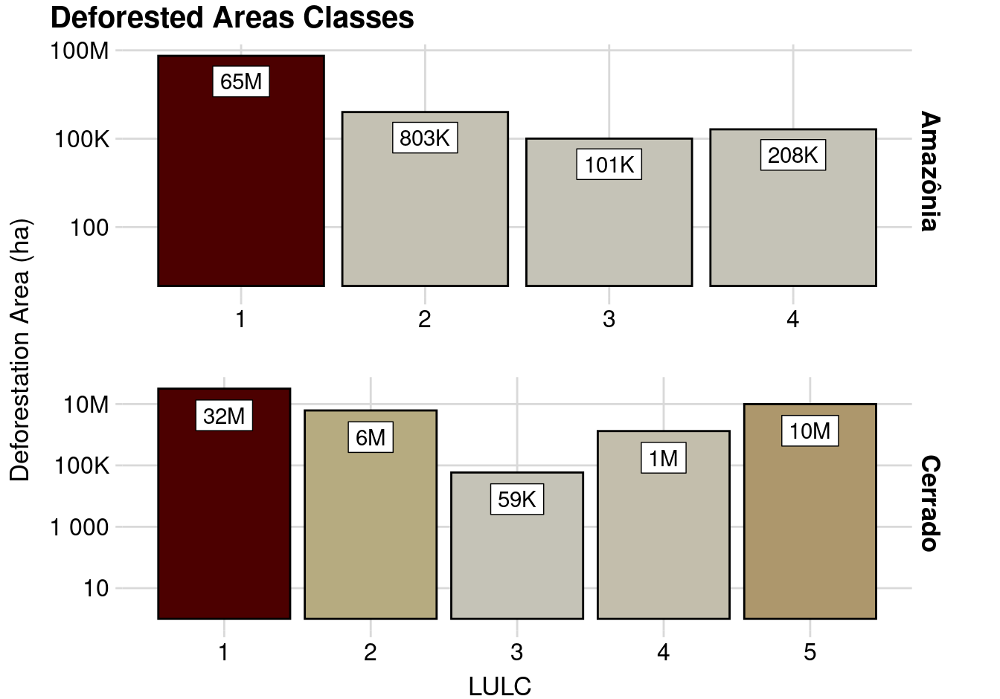

4 Results
4.1 How to read
The results will be organized by sections and subsections:
- Exploratory Analysis of the model variables;
- Deforestation;
- Introduction to concepts;
- Quantitative analysis;
- Sociology perspective analysis;
- Conservation Units;
- …
- Deforestation;
- Presentation of the models;
- Deforestation model;
- Show Directed Acyclic Graphs (DAGs);
- Explanation of models assumptions;
- Sociology perspective analysis;
- Land use transition model;
- …
- Deforestation model;
- Model results;
- Deforestation model;
- Validation results;
- Validation explanations;
- Test results;
- Test explanations;
- Land use transition model;
- …
- Deforestation model;
- Future Projection results;
The study will present three main quantitative results based on quantitative data: predictions on vegetation suppression, land use transitions, and social and environmental variables. Our predictions on vegetation suppression will show the likelihood and extent of removal events, serving as a basis for predicting the land use changes of the affected grid cells. Finally, we will predict the impact of these findings on the environment and human well-being.
As part of the study, I will not only present the predictions generated by the models but also perform an in-depth analysis of the model’s behavior. This analysis will provide a deeper understanding of the underlying mechanisms that drive the predictions and help to assess their reliability and accuracy. Furthermore, based on my confidence in the models and their results, I will make inferences about the studied phenomena. This will allow me to go beyond the mere presentation of the predictions and offer insights into the relationships between the variables, the causes of the observed patterns, and the implications of the results for the environment and human well-being. However, it is important to note that I will only take this step if I feel confident in the models and their results, as making inferences requires a strong foundation of knowledge and understanding.
4.2 Modelling variables
In this section I will analyse each variable of my model. It is important to note that all quantitative analysis were performed in the data stored in the base grid. So the figures and tables do not show distributions of the raw observations/estimates, but the values that were transformed to fit the grid cells (Figure 4.2).

4.2.1 Deforestation
What is deforestation? Even worse, what is a forest? A recent research reviewed 65 reports, and found 15 definitions of deforestation, and 9 definitions of forests (Oca et al. 2021).
Important
TODO:
- Tell in general the definitions for forests and deforestation (check the one proposed by oca-2021)
- Discuss about the problematic of forests definitions, which can have serious negative impacts to savannas, such as a good part of the Cerrado!
- Explain the definitions used by PRODES (INPE) to identify deforestation in the Cerrado and Amazon
READ:
- https://ssrn.com/abstract=4063325
- https://doi.org/10.1086/597794
- https://doi.org/10.1111/j.1475-682X.2007.00200.x
| Deforestation Area (ha) | ||||||||
| Minimum | 1st Quantile | Mean | Median | 3rd Quantile | Maximum | Standard Deviation | Missing Values | |
|---|---|---|---|---|---|---|---|---|
| Amazônia | 9 | 53 | 883 | 339 | 1K | 22K | 1K | 0 |
| Cerrado | 9 | 308 | 865 | 652 | 1K | 17K | 826 | 0 |





